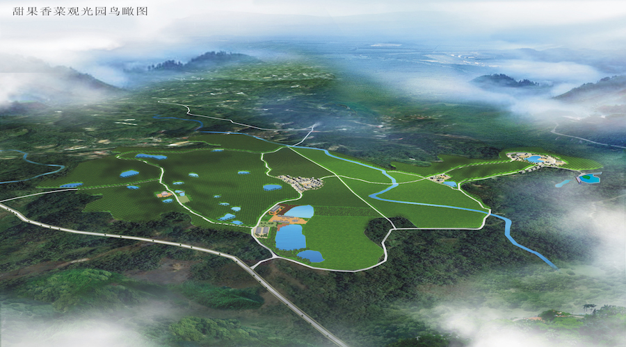
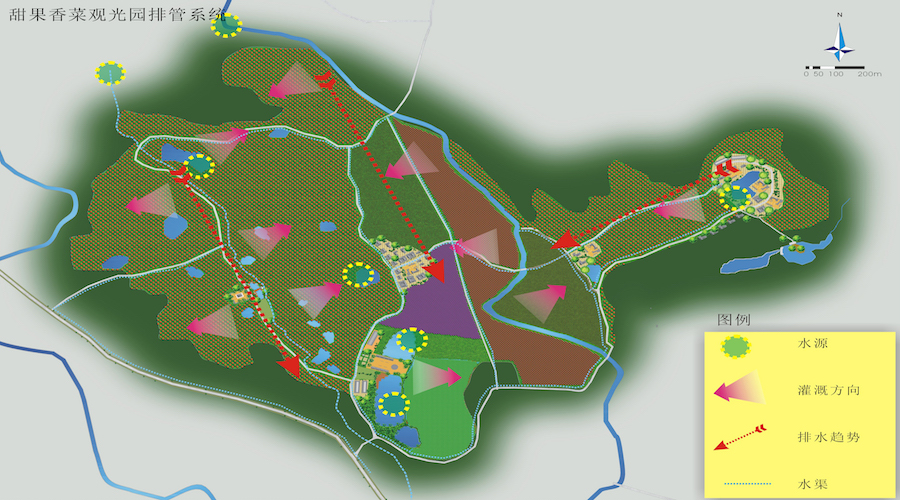
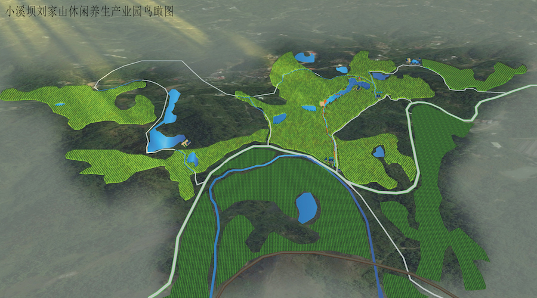

小溪坝镇位于江油市城区东北方向，距江油市32公里。交通便捷，是江油、梓潼、剑阁三市（县）交通枢纽，该区属亚热带季风气候，地势属浅丘地形，水源丰富，土质肥沃，生态环境良好，具有旅游开发的潜力。
该项目将小溪坝镇农业产业布局为“三园二区一基地”。“三园”：小溪坝甜果香菜观光产业园、小溪坝刘家山休闲养生产业园、小溪坝生态畜果循环农业产业园；“二区”：小溪坝生态粮经复合农业示范区、小溪坝优质生态粮油生产区；“一基地”：小溪坝农产品加工基地。小溪坝镇规划通过环境友好的循环技术设计，是整个小溪坝形成一个良性循环的农业生态系统，建立可持续发展的现代农业示范乡镇。
  